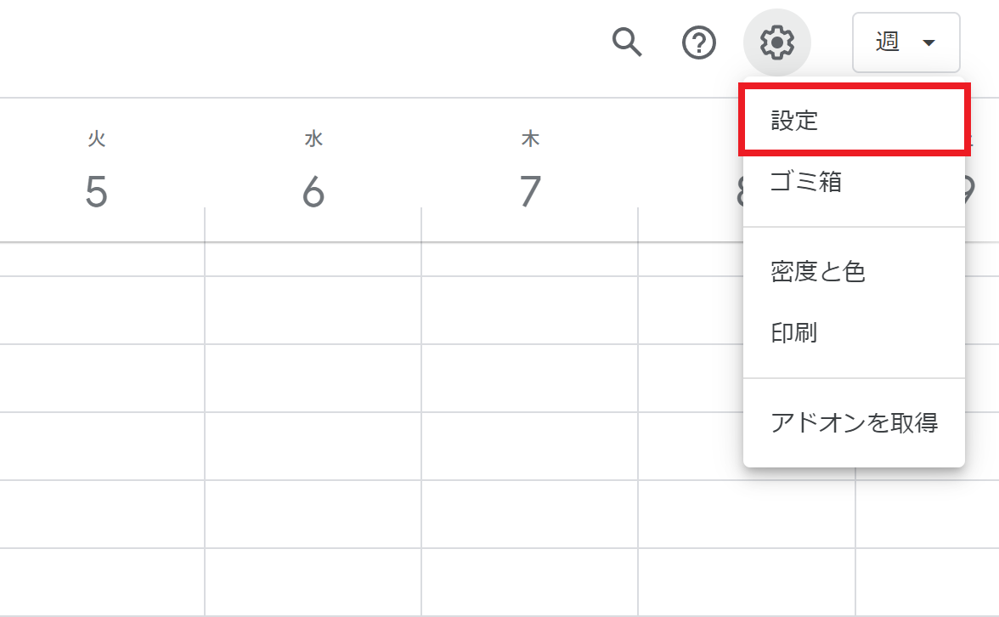
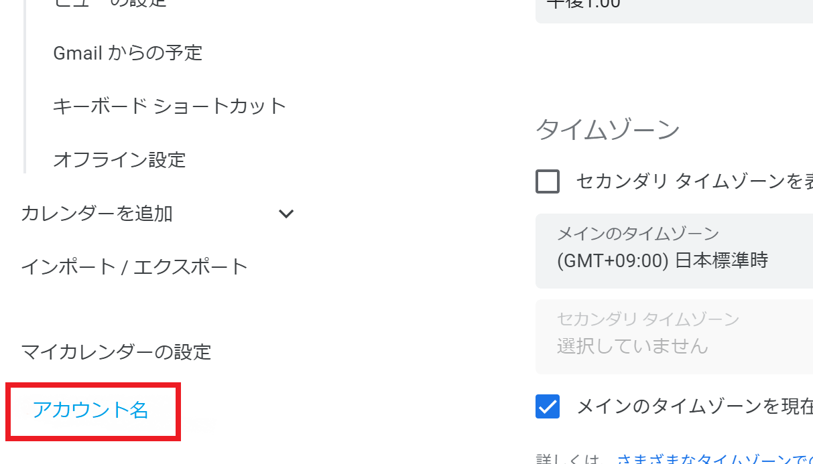
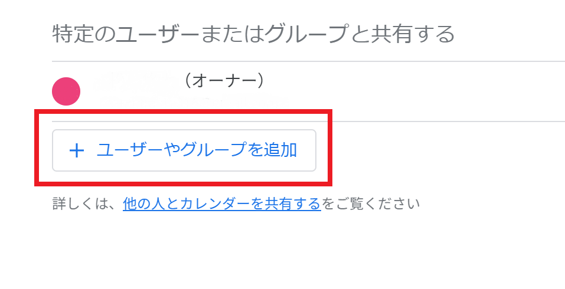

Googleカレンダーにアクセスし、ログインします。
予定を自動登録するため、自動登録botのユーザとカレンダーを共有します。
この設定により、他人(作者含む)が予定を取得できるようになることはありません。
① 設定を開きます
② 「マイカレンダーの設定」から、自分のアカウント名を選択します。
③ 「特定のユーザーまたはグループと共有する」から、「ユーザーやグループを追加」を選択します。
④ 以下のメールアドレスを追加し、「権限」で「予定の表示」を選択します。
autocalendaraccount@autocalender-397211.iam.gserviceaccount.com